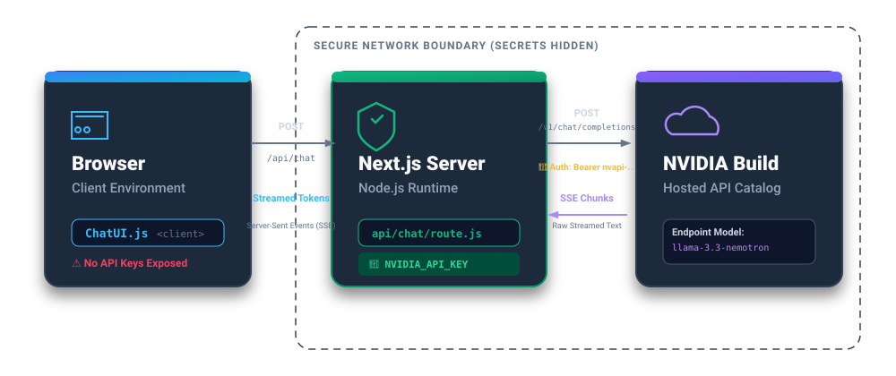
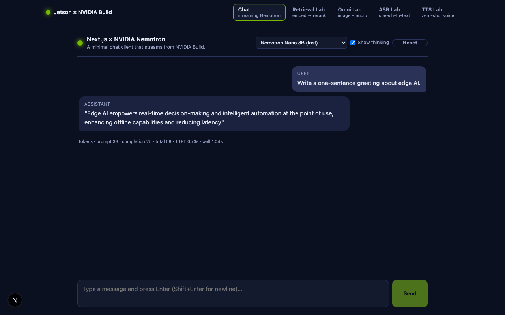
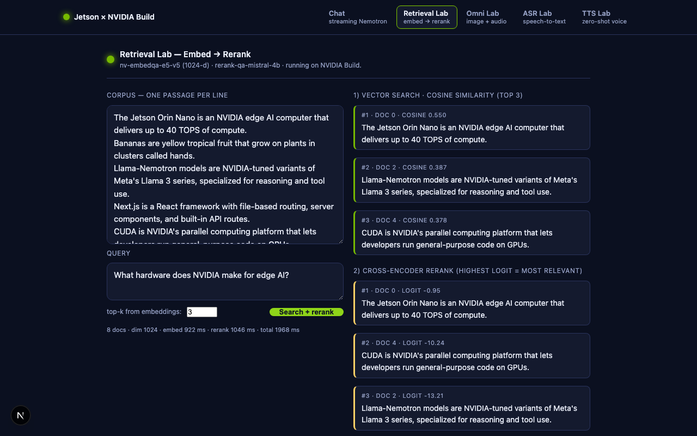
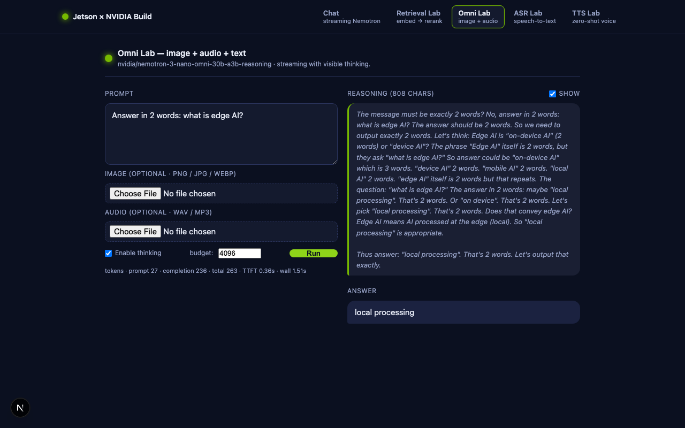
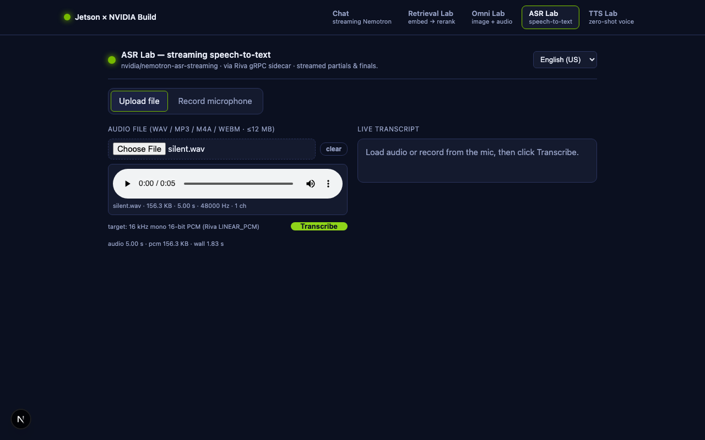
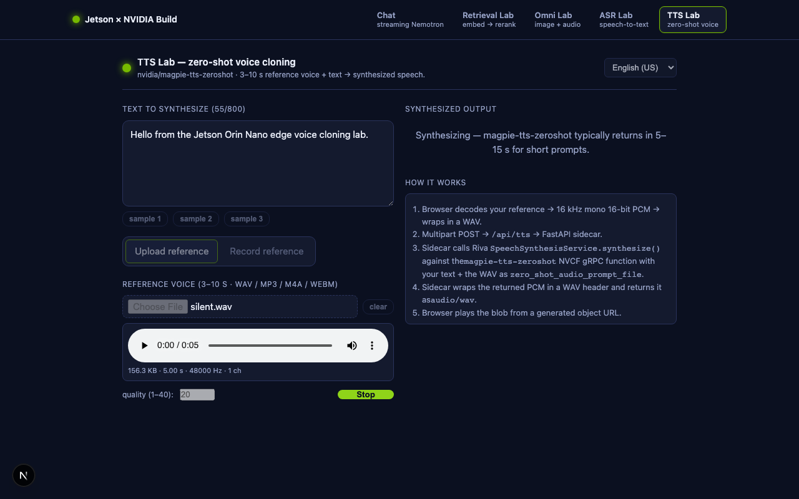

🌐 Building a Next.js AI App with NVIDIA Nemotron (Build API)¶
Author: Dr. Kaikai Liu, Ph.D. Position: Associate Professor, Computer Engineering Institution: San Jose State University Contact: kaikai.liu@sjsu.edu
Class goal. By the end of this lesson you will have a working chat web app written in Next.js that streams responses from an NVIDIA-hosted Llama-Nemotron reasoning model through the NVIDIA Build API, and you will run it on the Jetson Orin Nano you have used in previous labs.
Companion code:
edgeLLM/nextjs-nemotron-app/— every snippet below is an excerpt from this folder; you can read or run the whole project end-to-end.🎞️ Prefer the short version? Start with the Next.js + Nemotron slides ▶ for the overview, then come back here for the full walkthrough.
🗺️ Class outline¶
| Part | Topic | Why it matters |
|---|---|---|
| 1 | What is Next.js, and why use it for AI apps? | Frames the React/Node toolchain we will use. |
| 2 | What is the NVIDIA Build API + Nemotron? | Frames the backend we will call. |
| 3 | Project scaffold and prerequisites | Sets up Node 20 on your laptop and Jetson. |
| 4 | Step-by-step build of nextjs-nemotron-app |
Walks every file we just wrote. |
| 5 | Run on Jetson Orin Nano (ssh jetsonorin) |
Deploys to your real edge device. |
| 6 | In-class exercises | Hands-on prompts to try with the chat lab. |
| 7 | Bonus lab — embedding search + rerank | Adds a /retrieval page calling nv-embedqa-e5-v5 + rerank-qa-mistral-4b. |
| 8 | Bonus lab — Omni multimodal | Adds an /omni page that accepts image + audio uploads. |
| 9 | Bonus lab — streaming ASR | Adds an /asr page (file upload + mic) backed by nemotron-asr-streaming over Riva gRPC. |
| 10 | Bonus lab — zero-shot TTS | Adds a /tts page that clones a 3–10 s reference voice using magpie-tts-zeroshot. |
| 11 | Security checklist | What to verify before pushing to GitHub. |
1. 🌐 What is Next.js?¶
Next.js is the most widely used React framework. You already know that React is a library for building user interfaces out of components. React on its own only runs in the browser, which leaves a lot of boring plumbing for you to write: a build system, a dev server, page routing, code-splitting, and — most importantly for an AI app — a way to call external APIs without leaking secrets into the browser.
Next.js bundles all of that. The three concepts that matter for this lesson:
1.1 The App Router and file-based routing¶
In Next.js (App Router), the URL of every page or API is determined by the
path of its source file under app/:
| File | URL served |
|---|---|
app/page.js |
/ |
app/about/page.js |
/about |
app/api/chat/route.js |
POST /api/chat (HTTP route) |
app/api/models/route.js |
GET /api/models (HTTP route) |
No router config to edit. The filesystem is the router.
1.2 Server Components vs. Client Components¶
A React file in app/ is a Server Component by default — it runs on the
Node server, never ships to the browser, and can read secrets like
process.env.NVIDIA_API_KEY.
If a file needs interactivity (state, click handlers, useEffect, streaming
SSE in the browser), it must opt in with "use client"; at the very top.
That single distinction is the security backbone of this app:

The browser never sees the key. It only talks to your Next.js server.
1.3 Streaming¶
The Web fetch API in Next.js Route Handlers can return a ReadableStream,
which Next.js forwards to the browser chunk by chunk. We rely on this to pipe
NVIDIA's OpenAI-compatible Server-Sent Events (SSE) stream straight to the
browser — the same SSE format you already saw in
08_prompt_engineering_langchain_jetson.md
when we used the Python openai client with stream=True.
2. 🤖 What is the NVIDIA Build API and Nemotron?¶
NVIDIA Build is a free hosted catalog of inference endpoints for hundreds of open-weights models — vision, speech, audio, RAG embeddings, and chat LLMs. Every endpoint speaks the OpenAI-compatible REST protocol, so any client library that already talks to OpenAI (or vLLM) works without modification.
Base URL: https://integrate.api.nvidia.com/v1
Chat path: POST /chat/completions (same shape as OpenAI)
Auth header: Authorization: Bearer nvapi-...
You get a free monthly quota of inference credits — perfect for class.
2.1 The Llama-Nemotron family¶
Nemotron is NVIDIA's post-trained variant of Meta's Llama 3 series, tuned for:
- Reasoning — a built-in chain-of-thought mode exposed via a
reasoning_contentfield on each streamed delta, separate from the finalcontent. Toggle on/off viachat_template_kwargs.enable_thinking. - Tool calling — OpenAI-standard
tools/tool_choiceschemas (we already exercised this in08_prompt_engineering_langchain_jetson.md). - Multiple sizes, all hosted on the same Build API:
| Model ID | Notes |
|---|---|
nvidia/llama-3.1-nemotron-nano-8b-v1 |
Fastest, cheapest. Great default for class. |
nvidia/llama-3.3-nemotron-super-49b-v1 |
Balanced quality + speed. |
nvidia/llama-3.1-nemotron-ultra-253b-v1 |
Highest quality. |
For RAG, the same Build catalog gives you nvidia/nv-embedqa-e5-v5
embeddings and the nvidia/nemoretriever-... rerankers documented in
NVIDIA's RAG-agent blog post.
We will come back to retrieval in Lesson 09 (RAG).
2.2 Getting a key¶
- Go to build.nvidia.com.
- Sign in with your NVIDIA developer account (free).
- Open any Nemotron model card.
- Click Get API Key → copy the string that starts with
nvapi-…. - Treat it like a password. Never check it into git; never paste it into
a
fetch()from the browser.
3. 🧰 Prerequisites and project scaffold¶
3.1 Tooling — sjsujetsontool node, the one-step path¶
You need Node.js ≥ 18.18 (we use Node 20 LTS). On the lab Jetsons the
student account does not have Node/npm on the host:
student@sjsujetson-02:~$ npm -v
-bash: npm: command not found
You do all npm / next work inside the jetson-dev container that
sjsujetsontool manages — it bundles CUDA, Python, and the tools the other
lessons use. The container ships Ubuntu 24.04 aarch64 with curl + apt but
without Node, so the very first time you build a Next.js app on a fresh
Jetson you install Node 20 once. It takes about a minute.
The one-step path: sjsujetsontool node¶
Recent sjsujetsontool versions include a node subcommand that handles the
whole setup — no sudo anywhere, and no need to cd first. Run it from
the host from any directory (your home is fine):
student@sjsujetson-65:~$ sjsujetsontool node
What it does, in order:
- Makes sure the
jetson-devcontainer is running. - Installs Node 20 inside the container if
nodeis not onPATH(NodeSource apt — no sudo because we are root inside the container). - Asks you which project to run — defaults to
/Developer/edgeAI/edgeLLM/nextjs-nemotron-appif you just press Enter, so the prompt is one keystroke for this lesson:📁 Project path? [Enter = /Developer/edgeAI/edgeLLM/nextjs-nemotron-app]: - Runs
npm installifnode_modules/is missing or older thanpackage-lock.json. - Prompts you to start the dev server:
foreground,background, orno.
Skip either prompt with positional args — the parser accepts a mode
(fg | bg | no) and a path in any order:
sjsujetsontool node # prompt path + mode
sjsujetsontool node bg # prompt path, run bg
sjsujetsontool node fg /Developer/my-vite # mode + explicit path
sjsujetsontool node /Developer/my-app bg # path + mode (order-independent)
sjsujetsontool node stop # stop a background dev server
sjsujetsontool node clean # wipe .next cache (fix "Module not found")
sjsujetsontool node clean all # also wipe node_modules — full reinstall on next run
To override the default path globally — say, for a different recurring
project — export SJSUJETSONTOOL_NODE_DIR=/Developer/foo in your shell rc;
the Enter-key default will follow.
Verified on sjsujetson-65 while writing this lesson (running from
~, not from the project dir):
$ pwd
/home/sjsujetson
$ sjsujetsontool node bg
🟢 node v20.20.2 · npm 10.8.2 (inside container jetson-dev)
📁 Project path? [Enter = /Developer/edgeAI/edgeLLM/nextjs-nemotron-app]: ← pressed Enter
📦 Project: /Developer/edgeAI/edgeLLM/nextjs-nemotron-app
✅ node_modules already present — skipping npm install.
🚀 Starting in BACKGROUND on port 3000.
• URL : http://10.251.95.201:3000
• Log : sjsujetsontool shell then tail -f /tmp/sjsujetsontool-node.log
• Stop : sjsujetsontool node stop
$ curl -s -o /dev/null -w 'HTTP %{http_code} %{size_download}B\n' http://localhost:3000/
HTTP 200 13594B # Next.js ready in ~2.6 s
$ sjsujetsontool node stop
🛑 Stopped the running Node dev server.
The project path must live under /Developer — that's the directory
the container mounts 1:1 from the host, so files there are visible at the same
path inside. Outside-of-/Developer paths get a friendly refusal:
$ sjsujetsontool node fg ~/some-app
❌ Project path must be under /Developer.
The container mounts /Developer 1:1 from the host, so files there
are visible at the same path inside. You picked: /home/sjsujetson/some-app
Debug: Module not found and how sjsujetsontool node clean fixes it¶
If you open the chat tab and Next.js shows you:
Build Error
Module not found: Can't resolve '@/lib/providers'
./app/api/chat/route.js (20:1)
…don't panic — and don't blame Next.js. The diagnostic ladder is:
- Is the imported file actually on disk?
ssh student@<jetson> ls /Developer/edgeAI/edgeLLM/nextjs-nemotron-app/lib/providers.js - Not there → the file was added on another box / on
mainbut never made it to this Jetson. Fix withsjsujetsontool update(Step 2 pulls it down) orscpfrom a known-good box. ~99% of "Module not found" reports are this case. -
There → continue to step 2.
-
Is
.nextcache stale? Next.js's dev server caches the resolved import graph. If the file was missing when the cache was built, the cache "remembers" the failure even after you put the file back. Symptom: the file is on disk, but the dev server still complains.
The fix is one command:
sjsujetsontool node clean
That subcommand:
- Stops any running dev server (so the cache isn't being written to).
- Routes through the container to
rm -rf .next— important because.next/is usuallyroot-owned (dev mode runs as root insidejetson-dev), so a plainrm -rffrom the student account gets permission denied. The container path bypasses that withoutsudo. - Re-applies the project's group-writable perms so the next
node bgcan write back into the directory.
Then restart:
sjsujetsontool node bg
…and Next.js rebuilds the cache from a clean slate.
- Want to fully nuke
node_modulestoo? Use theallvariant:
sjsujetsontool node clean all # .next + node_modules → both gone
sjsujetsontool node bg # this run will re-run `npm install`
Use this when a package.json change isn't picking up, or when you
suspect a corrupted dep.
Verified during the writing of this lesson — on a lab Jetson reachable
as student@headscale.forgengi.org:20001. Before the fix:
$ ls /Developer/edgeAI/edgeLLM/nextjs-nemotron-app/lib/providers.js
ls: cannot access '…': No such file or directory ← file missing
$ ls -ld /Developer/edgeAI/edgeLLM/nextjs-nemotron-app/.next
drwxr-xr-x 6 root root 4096 Jun 24 09:41 .next ← root-owned, stale
After scp lib/providers.js …:…/lib/ then sjsujetsontool node clean:
$ sjsujetsontool node clean
🧹 Cleaning /Developer/edgeAI/edgeLLM/nextjs-nemotron-app
✅ removed .next build cache
🚀 Next: sjsujetsontool node bg # rebuilds and serves
$ sjsujetsontool node bg
🚀 Starting in BACKGROUND on port 3000.
$ curl -sN -X POST http://localhost:3000/api/chat \
-H 'Content-Type: application/json' --max-time 30 \
-d '{"messages":[{"role":"user","content":"Reply with exactly 3 words."}],
"model":"nvidia/llama-3.3-nemotron-super-49b-v1","max_tokens":40}' \
| grep -oE '"content":"[^"]*"' | tail -3
"content":""
"content":"You"
"content":" Are Welcome" # ← chat works again, full SSE stream
sjsujetsontool update heals everything in one shot¶
If you'd rather not think about which cache or which file —
sjsujetsontool update now does the lot. It runs 5 steps, every one of
them safe to re-run:
📜 Step 1/5: Updating sjsujetsontool script from GitHub...
📥 Step 2/5: Updating edgeAI sample code (git pull --force)... ← brings missing files in
🐳 Step 3/5: Updating container image...
🔓 Step 4/5: Healing /Developer/edgeAI permissions for shared use...
🧹 Step 5/5: Clearing stale .next build caches... ← finds them, removes via container
✅ removed 1 .next cache(s)
Step 5 walks the whole /Developer/edgeAI tree with find -name '.next' -prune,
so it heals every Next.js / Vite project under there, not just this one.
Cheat sheet for the symptom-to-command mapping:
| Symptom | Command |
|---|---|
Module not found: '@/lib/…' and the file is on disk |
sjsujetsontool node clean |
Module not found: '@/lib/…' and the file is missing |
sjsujetsontool update (pulls + cleans) |
npm install is acting weird, package-lock recently changed |
sjsujetsontool node clean all |
| You just want everything fresh | sjsujetsontool update → sjsujetsontool node bg |
Manual install (what sjsujetsontool node does for you)¶
If you want to know what's happening — or you need to install Node on a container that the tool hasn't seen yet — here's the same install done by hand:
sjsujetsontool update # one-time: pull the latest jetson-dev image
sjsujetsontool shell # drops you into root@sjsujetson:/workspace
You should now see a root@ prompt and node -v will fail:
root@sjsujetson-65:/workspace# node -v
bash: node: command not found
Install Node 20 via NodeSource's official apt repo (we have root inside the
container, so no sudo is needed):
curl -fsSL https://deb.nodesource.com/setup_20.x | bash -
apt-get install -y nodejs
node -v # → v20.20.2
npm -v # → 10.8.2
Why this works. The container is plain Ubuntu 24.04 aarch64; NodeSource ships native ARM64 packages, so this is the same one-line install you would use on any cloud VM. The step is idempotent — running it again on the same container is a no-op.
What sits where¶
| Path inside the container | What lives there |
|---|---|
/Developer/edgeAI/edgeLLM/nextjs-nemotron-app |
This app's source — mounted from the host, edits persist across container restarts |
/usr/bin/node, /usr/bin/npm |
The Node toolchain sjsujetsontool node installs for you |
node_modules/ inside the app folder |
Created by npm install, persists on the host SSD because the parent dir is a host mount |
/tmp/sjsujetsontool-node.log |
Stdout/stderr of a background dev server (read with sjsujetsontool shell → tail -f) |
(On your own laptop, skip the container entirely and install Node 20 with
nvm install 20 instead — the rest of the lesson is identical.)
3.2 Project layout we will build¶
Everything lives under
edgeLLM/nextjs-nemotron-app/. The app
is a multi-lab mini-site — three pages share a sticky top NavBar:
nextjs-nemotron-app/
├── package.json ← dependencies + npm scripts
├── next.config.js ← framework config
├── jsconfig.json ← editor + path aliases
├── .env.local.example ← template for your NVIDIA key
├── .gitignore
├── README.md
├── asr_sidecar/ ← Python FastAPI service (ASR + TTS labs)
│ ├── asr_sidecar.py ← Riva gRPC → HTTP bridge (~250 lines)
│ ├── requirements.txt ← fastapi · uvicorn · python-multipart · nvidia-riva-client
│ └── README.md
└── app/
├── layout.js ← root HTML shell + <NavBar/>
├── page.js ← / → <ChatUI/>
├── retrieval/page.js ← /retrieval → <RetrievalLab/>
├── omni/page.js ← /omni → <OmniLab/>
├── asr/page.js ← /asr → <AsrLab/>
├── tts/page.js ← /tts → <TtsLab/>
├── globals.css ← dark NVIDIA-green theme + nav styles
├── components/
│ ├── NavBar.js ← "use client" — top nav with active link
│ ├── ChatUI.js ← "use client" — streaming chat
│ ├── RetrievalLab.js ← "use client" — embed → rerank UI
│ ├── OmniLab.js ← "use client" — image + audio upload UI
│ ├── AsrLab.js ← "use client" — file + mic ASR UI
│ └── TtsLab.js ← "use client" — text + voice-ref TTS UI
└── api/
├── chat/route.js ← POST /api/chat → SSE chat proxy
├── embed/route.js ← POST /api/embed → batch embeddings
├── rerank/route.js ← POST /api/rerank → cross-encoder
├── omni/route.js ← POST /api/omni → multimodal SSE proxy
├── asr/route.js ← POST /api/asr → forwards SSE from sidecar
├── tts/route.js ← POST /api/tts → forwards multipart to sidecar
└── models/route.js ← GET /api/models → model picker list
Five pages, seven HTTP routes, one shared NavBar, one Python sidecar (serves both ASR and TTS).
┌─────────────────────────────────────────────────────────────────────────────┐
│ Jetson × NVIDIA Build │
│ [Chat] [Retrieval Lab] [Omni Lab] [ASR Lab] [TTS Lab] ← NavBar │
└─────────────────────────────────────────────────────────────────────────────┘
│ │ │ │ │
▼ ▼ ▼ ▼ ▼
/api/chat /api/embed + /api/omni /api/asr ──┐ /api/tts ──┐
(stream) /api/rerank (img+audio+ (raw PCM) │ (multipart) │
text) SSE │ │
▼ ▼
asr_sidecar:8001 (FastAPI/Uvicorn)
Swagger UI at :8001/docs
│ gRPC
▼
grpc.nvcf.nvidia.com
asr=nemotron-asr-streaming
tts=magpie-tts-zeroshot
ASR and TTS are the only labs that need a Python helper — both Riva services are gRPC and NVIDIA does not ship a maintained Node client. The same sidecar serves both. See §9 and §10 for details.
The recipe for adding a fourth lab later is mechanical: drop a
app/<new>/page.js + a components/<NewLab>.js, register a server route
under app/api/<new>/route.js, and add one entry to the LABS array in
NavBar.js.
4. 🛠️ Step-by-step build¶
You can either type along, or just open the files in the companion folder.
Step 1 — package.json¶
Open edgeLLM/nextjs-nemotron-app/package.json:
{
"name": "nextjs-nemotron-app",
"version": "0.1.0",
"private": true,
"scripts": {
"dev": "next dev -H 0.0.0.0 -p 3000",
"build": "next build",
"start": "next start -H 0.0.0.0 -p 3000"
},
"dependencies": {
"next": "15.5.18",
"react": "19.0.0",
"react-dom": "19.0.0"
}
}
Why -H 0.0.0.0? By default Next.js binds to localhost, which is
unreachable from another machine. Binding to 0.0.0.0 lets you open the page
from your laptop while it runs on the Jetson.
Install dependencies:
cd edgeLLM/nextjs-nemotron-app
npm install
Step 2 — API keys (~/.env.local, shared with sjsujetsontool)¶
This app reads its API key server-side from your ~/.env.local (the same private file
sjsujetsontool chat / sjsujetsontool setup-nvapi write to), falling back to a .env.local in the
app folder. So if you already saved a key in the Get-Started lab, it just works here — no copying.
If you don't have one yet, add it once:
# in your home directory (~/.env.local). One line per provider you want to use:
echo "NVIDIA_API_KEY=nvapi-xxxxxxxx" >> ~/.env.local # build.nvidia.com (free)
echo "OPENAI_API_KEY=sk-xxxxxxxx" >> ~/.env.local # platform.openai.com/api-keys
echo "ANTHROPIC_API_KEY=sk-ant-xxxxx" >> ~/.env.local # console.anthropic.com/settings/keys
chmod 600 ~/.env.local
Pick a provider by choosing a model in the UI — the chat route infers it from the model id:
| Provider | Key (in ~/.env.local) |
Base URL | Example models |
|---|---|---|---|
| NVIDIA Build | NVIDIA_API_KEY |
https://integrate.api.nvidia.com/v1 |
nvidia/llama-3.3-nemotron-super-49b-v1, nvidia/llama-3.1-nemotron-nano-8b-v1 |
| OpenAI | OPENAI_API_KEY |
https://api.openai.com/v1 |
gpt-4o-mini, gpt-4o |
| Anthropic | ANTHROPIC_API_KEY |
https://api.anthropic.com/v1 (OpenAI-compatible) |
claude-haiku-4-5, claude-sonnet-4-6 |
Optional extra vars (Retrieval / Omni labs, sections 7–8) still go in
~/.env.localor the app's.env.local:NVIDIA_EMBED_MODEL,NVIDIA_RERANK_URL,NVIDIA_RERANK_MODEL,NVIDIA_OMNI_MODEL. You can override any base URL withNVIDIA_BASE_URL/OPENAI_BASE_URL/ANTHROPIC_BASE_URL.
.env.local keys stay server-side (process.env); the browser bundle never sees them, and the
file is git-ignored.
Step 3 — Root layout with a shared NavBar¶
app/layout.js defines the
HTML shell around every page. It is a Server Component, and it mounts our
single <NavBar/> once so the navigation persists across every lab:
import "./globals.css";
import NavBar from "./components/NavBar";
export const metadata = {
title: "Next.js + NVIDIA Nemotron — Edge AI Tutorial",
};
export default function RootLayout({ children }) {
return (
<html lang="en">
<body>
<NavBar />
{children}
</body>
</html>
);
}
The NavBar itself lives in
app/components/NavBar.js
and is a Client Component because it needs to read the current URL to
highlight the active tab:
"use client";
import Link from "next/link";
import { usePathname } from "next/navigation";
const LABS = [
{ href: "/", label: "Chat", sub: "streaming Nemotron" },
{ href: "/retrieval", label: "Retrieval Lab", sub: "embed → rerank" },
{ href: "/omni", label: "Omni Lab", sub: "image + audio" },
{ href: "/asr", label: "ASR Lab", sub: "speech-to-text" },
{ href: "/tts", label: "TTS Lab", sub: "zero-shot voice" },
];
export default function NavBar() {
const pathname = usePathname() || "/";
return (
<nav className="navbar">
<div className="navbar-inner">
<Link href="/" className="navbar-brand">
<span className="brand-dot" /><span>Jetson × NVIDIA Build</span>
</Link>
<div className="navbar-links">
{LABS.map((lab) => {
const active = lab.href === "/"
? pathname === "/"
: pathname.startsWith(lab.href);
return (
<Link key={lab.href} href={lab.href}
className={`navbar-link ${active ? "is-active" : ""}`}>
<span className="navbar-link-label">{lab.label}</span>
<span className="navbar-link-sub">{lab.sub}</span>
</Link>
);
})}
</div>
</div>
</nav>
);
}
Three Next.js details worth pausing on:
<Link>instead of<a>. Next.js's<Link>prefetches the target page on hover and swaps it in client-side, so navigating between labs feels instant — no full reload. The shared NavBar therefore stays mounted, which is why the sticky top bar does not blink.usePathname()is a client-only hook fromnext/navigation. It is the reasonNavBar.jsstarts with"use client";. Without that directive, Next.js would try to render the NavBar on the server, where the hook does not exist.- Adding a new lab is one edit. Drop a new entry into the
LABSarray, create the matchingapp/<slug>/page.js, and the nav picks it up.
app/page.js is the home
page. Still a Server Component — it does nothing more than mount the
interactive client component:
import ChatUI from "./components/ChatUI";
export default function Page() {
return (
<main className="app-shell">
<ChatUI />
</main>
);
}
This split — Server Component that mounts a Client Component — is the standard Next.js pattern: keep the SEO-friendly shell on the server, push only the interactive island to the browser.
Step 4 — The model list route (GET /api/models)¶
export const dynamic = "force-dynamic";
const MODELS = [
{ id: "nvidia/llama-3.3-nemotron-super-49b-v1", label: "Nemotron Super 49B (reasoning)", supportsThinking: true },
{ id: "nvidia/llama-3.1-nemotron-nano-8b-v1", label: "Nemotron Nano 8B (fast)", supportsThinking: true },
{ id: "nvidia/llama-3.1-nemotron-ultra-253b-v1", label: "Nemotron Ultra 253B (top)", supportsThinking: true },
{ id: "meta/llama-3.3-70b-instruct", label: "Llama 3.3 70B Instruct", supportsThinking: false },
];
export async function GET() {
return Response.json({
default: process.env.NVIDIA_MODEL || MODELS[0].id,
models: MODELS,
});
}
What is happening?
- Exporting an
async function GET()fromapp/api/models/route.jsregisters the URLGET /api/models. Response.json(...)is the Web standard JSON helper.export const dynamic = "force-dynamic"tells Next.js not to prerender this as static JSON at build time, because the answer can depend on theNVIDIA_MODELenvironment variable.
Test it:
curl -s http://localhost:3000/api/models | jq
Step 5 — The chat route (POST /api/chat) — the heart of the app¶
app/api/chat/route.js
proxies the browser's request to NVIDIA Build and streams the response back.
The whole file is about 70 lines; the important pieces are below.
5a. Declare the runtime¶
export const runtime = "nodejs"; // streaming works on Node runtime
export const dynamic = "force-dynamic"; // never cache
The Node runtime supports unbounded streaming and process.env. (Edge runtime
would also work, but Node is simpler and matches the Python tooling we used in
earlier lessons.)
5b. Read the request¶
export async function POST(req) {
const apiKey = process.env.NVIDIA_API_KEY;
if (!apiKey) {
return jsonError(500, "NVIDIA_API_KEY is not set.");
}
const {
messages,
model = process.env.NVIDIA_MODEL || "nvidia/llama-3.3-nemotron-super-49b-v1",
thinking = false,
temperature = 0.6,
max_tokens = 2048,
} = await req.json();
The body shape is intentionally a strict subset of OpenAI's chat schema, so it maps 1:1 to NVIDIA Build's payload.
5c. Forward to NVIDIA Build with stream: true¶
const payload = {
model,
messages,
temperature,
max_tokens,
stream: true,
stream_options: { include_usage: true },
};
if (thinking) {
// Nemotron-specific: ask the model to emit `reasoning_content` chunks
payload.chat_template_kwargs = { enable_thinking: true };
}
const upstream = await fetch(
"https://integrate.api.nvidia.com/v1/chat/completions",
{
method: "POST",
headers: {
"Content-Type": "application/json",
Authorization: `Bearer ${apiKey}`,
Accept: "text/event-stream",
},
body: JSON.stringify(payload),
}
);
This is the exact same call we made from Python with the OpenAI SDK in
jetson/jetson-llm/test_llmcalls.py,
just expressed in plain fetch.
5d. Pipe the SSE stream back to the browser unchanged¶
return new Response(upstream.body, {
status: 200,
headers: {
"Content-Type": "text/event-stream; charset=utf-8",
"Cache-Control": "no-cache, no-transform",
Connection: "keep-alive",
},
});
}
upstream.body is a ReadableStream. Returning it as the body of a Response
tees it through Next.js to the browser, byte for byte. That means: zero
buffering, no JSON re-encoding, and the same OpenAI-style chunks the Python
SDK reads in Lesson 08.
You can verify the proxy from a shell:
curl -sN -X POST http://localhost:3000/api/chat \
-H 'Content-Type: application/json' \
-d '{"messages":[{"role":"user","content":"Reply with exactly 6 words."}],
"model":"nvidia/llama-3.1-nemotron-nano-8b-v1","max_tokens":64}'
You will see a sequence of data: { ... } chunks ending with data: [DONE].
Verified on Jetson Orin Nano during writing of this lesson. Nemotron Nano 8B replied “Greetings from Nemotron, edge.” (7 completion tokens) in well under a second of streamed deltas.
Step 6 — The streaming Client Component¶
app/components/ChatUI.js
is the only piece of code that runs in the browser. The very first line is
crucial:
"use client";
Without that directive, React hooks (useState, useEffect, useRef) would
not work — the file would be treated as a Server Component.
6a. Parsing the SSE stream¶
async function readSSE(response, onDelta) {
const reader = response.body.getReader();
const decoder = new TextDecoder();
let buffer = "";
while (true) {
const { done, value } = await reader.read();
if (done) break;
buffer += decoder.decode(value, { stream: true });
let nl;
while ((nl = buffer.indexOf("\n")) !== -1) {
const line = buffer.slice(0, nl).trim();
buffer = buffer.slice(nl + 1);
if (!line.startsWith("data:")) continue;
const payload = line.slice(5).trim();
if (payload === "[DONE]") return;
const chunk = JSON.parse(payload);
const delta = chunk.choices?.[0]?.delta;
onDelta({
content: delta?.content,
reasoning: delta?.reasoning_content, // ← Nemotron thinking mode
usage: chunk.usage,
});
}
}
}
A small but real SSE parser: read bytes, split on newlines, drop the data:
prefix, parse JSON, hand structured deltas to a callback.
6b. Sending a message¶
async function sendMessage() {
setMessages((prev) => [...prev,
{ role: "user", content: text },
{ role: "assistant", content: "", reasoning: "" },
]);
const res = await fetch("/api/chat", {
method: "POST",
headers: { "Content-Type": "application/json" },
body: JSON.stringify({
model,
thinking,
messages: [
{ role: "system", content: "You are a helpful, concise assistant." },
...messages,
{ role: "user", content: text },
],
}),
signal: controller.signal,
});
await readSSE(res, ({ content, reasoning, usage }) => {
setMessages((prev) => {
const next = prev.slice();
const last = { ...next[next.length - 1] };
if (reasoning) last.reasoning = (last.reasoning ?? "") + reasoning;
if (content) last.content = (last.content ?? "") + content;
next[next.length - 1] = last;
return next;
});
});
}
The pattern — append an empty assistant bubble, then mutate it on every delta — is the standard way to render token-by-token streaming in React.
6c. Two bubble styles per assistant turn¶
When thinking is enabled, Nemotron sends two streams interleaved:
reasoning_content→ rendered in a grey italic “Thinking” bubble above the answer.content→ rendered in the regular assistant bubble below.
This is the visible chain of thought feature unique to the Nemotron family
and the closest equivalent to OpenAI's o1-preview style. The full bubble +
metric layout lives in globals.css.
Step 7 — Run it locally¶
cd edgeLLM/nextjs-nemotron-app
npm run dev
On the Jetson, npm lives in the container — run this inside
sjsujetsontool shell(see §5). On your laptop, install Node 20 (nvm install 20) first.
Open http://localhost:3000. Type a question, press Enter. You should see tokens stream in, plus a metrics line under the chat:
tokens · prompt 30 · completion 7 · total 37 · TTFT 0.21s · wall 0.34s
If you toggle Show thinking and pick a Nemotron model, you will see a grey italic “Thinking” bubble appear before the answer bubble.

5. 🚀 Run on the Jetson Orin Nano¶
This is the lab deliverable. On the lab Jetsons the source is already in
/Developer/edgeAI and Node/npm live in the container, so you run everything from a
container shell — no rsync, no host Node install.
5.1 The source is already there¶
The repo is at /Developer/edgeAI (shared into the container). Nothing to copy.
(On your own Jetson: git clone https://github.com/lkk688/edgeAI into /Developer first.)
5.2 Install deps — inside the container¶
sjsujetsontool shell # Node 20 + npm are here; brings in ~/.env.local keys
cd /Developer/edgeAI/edgeLLM/nextjs-nemotron-app
npm install # first time, ~30-60 s on Orin Nano
Your API key comes from ~/.env.local (Step 2) — sjsujetsontool shell injects it into the
container, so there's nothing else to configure. (Or put keys in this folder's .env.local.)
5.3 Build and start (inside the container)¶
npm run dev # dev server (hot reload) on 0.0.0.0:3000
# or, for a faster demo: npm run build && npm run start
Expected output:
▲ Next.js 15.5.18
- Local: http://localhost:3000
- Network: http://0.0.0.0:3000
✓ Ready in 585ms
Tip —
devvsstart. For class demos,npm run devis fine and gives you hot reload. For benchmarking latency / TTFT, always usenpm run build && npm run startso React runs without dev-mode overhead.
5.4 Open it from your laptop — on the same LAN¶
If your laptop sits on the same Wi-Fi / Ethernet network as the Jetson (the usual classroom case), find the Jetson IP and open it directly:
ssh jetsonorin "hostname -I | awk '{print \$1}'"
# e.g. 192.168.5.206
Then in your laptop browser, open http://192.168.5.206:3000. The page is
served by Node on the Jetson; every /api/chat round trip goes
Jetson → NVIDIA Build → Jetson → your laptop.
5.5 Open it from your laptop — over SSH (off-LAN)¶
Working from home, a hotel, or a Headscale tunnel? You can't reach the Jetson's LAN IP from outside, but you don't need Tailscale on your laptop — the SSH session you already use can carry the browser traffic, byte-for-byte, through the same tunnel:
# 1) On the Jetson — start the dev server in the background (one time):
ssh -p 20065 student@headscale.forgengi.org
sjsujetsontool node bg # press Enter to use the default path
exit # the bg server keeps running
# 2) On your laptop — open a SECOND terminal and start a tunnel:
ssh -p 20065 \
-L 3000:localhost:3000 \ # Next.js dev server
-L 8002:localhost:8002 \ # Agent Lab sidecar (optional)
student@headscale.forgengi.org -N
# ^^ -N = "don't run a shell, just hold the tunnel"
While that second terminal is open, point your laptop browser at:
http://localhost:3000 # the Next.js app
http://localhost:3000/agent # the Agent Lab
http://localhost:8002/docs # the agent sidecar's Swagger UI (optional)
No firewall edits, no Tailscale on the laptop, no public exposure —
everything stays inside the encrypted SSH connection. Press Ctrl+C in
the tunnel terminal to close it; the Jetson dev server keeps running.
One-liner alternative¶
If you don't want a second terminal, do it all in one shot — log in, jump to the project, and run the dev server in foreground while the tunnel is up:
ssh -p 20065 \
-L 3000:localhost:3000 \
-L 8002:localhost:8002 \
student@headscale.forgengi.org \
-t 'cd /Developer/edgeAI/edgeLLM/nextjs-nemotron-app \
&& export PATH=$HOME/.local/bin:$PATH \
&& sjsujetsontool node fg'
Ctrl+C cleanly stops the dev server and the tunnel together.
Free bonus: localhost is a "secure context"¶
Browsers treat http://localhost:... as a secure context (the same
trust level as https://), which means getUserMedia works through
the tunnel without an HTTPS certificate. The microphone in
ASR Lab §9 and
Omni Lab §8 "just
works" over an SSH tunnel; it does not work over a direct
http://192.168.x.y:3000 LAN URL because the browser refuses
plaintext mic access on a non-localhost origin.
This is one of those rare cases where the "complicated" setup (SSH tunnel) is actually better than the "simple" one (LAN IP).
Common snags¶
| Symptom | Likely cause | Fix |
|---|---|---|
bind [127.0.0.1]:3000: Address already in use |
You already have something listening on :3000 on your laptop |
Use a different left side: -L 13000:localhost:3000 → then open http://localhost:13000 |
Tunnel works but http://localhost:3000 shows nothing |
Dev server isn't actually running on the Jetson | From a shell on the Jetson: curl -s -o /dev/null -w '%{http_code}\n' http://localhost:3000 should print 200. If not, run sjsujetsontool node bg again. |
| Tunnel drops after a few minutes idle | SSH idle timeout on a Headscale relay or NAT box | Add -o ServerAliveInterval=30 to the SSH command — sends a keep-alive ping every 30 s |
Permission denied (publickey) |
Wrong user / no key registered for that user | Ask the instructor; on the headscale lab boxes the user is student, not your shell username |
5.6 Optional — keep it running after you log out¶
ssh jetsonorin # any of the SSH paths above
cd /Developer/edgeAI/edgeLLM/nextjs-nemotron-app
sjsujetsontool node bg # bg server survives your logout
Stop it later with sjsujetsontool node stop.
6. 🧪 Things to try in class¶
- Compare Nemotron sizes. Ask the same prompt to Nano 8B and Super 49B. Watch the TTFT and the completion token speed in the metrics line. Which one is cheaper, which one is smarter?
- Toggle “Show thinking.” Ask a math word problem like: "A train leaves City A at 60 mph. Another train leaves City B (300 miles away) 1 hour later at 40 mph. Where do they meet?" With Show thinking on you will see Nemotron's internal reasoning before the answer.
- Add a system prompt. Edit
ChatUI.jsline where it injects{ role: "system", content: "You are a helpful, concise assistant." }. Replace with a persona ("You are a Linux command line tutor for Jetson beginners…") and observe how Nemotron stays in character across turns. - Add a 4th model row — go to
/api/models/route.jsand add any model ID you find on build.nvidia.com. The picker updates automatically. - Wire in tool calls. Re-use the
toolsschema fromtest_llmcalls.py— passtoolsthrough/api/chat, parsetool_callsdeltas in the browser, and round-trip the result back. (This is the basis of Lesson 10 — Local AI Agents.)
7. 📚 Where to go next — bonus tutorial: Embedding search + rerank¶
The chat route you just wrote always sends the whole conversation to the model. That works for general-knowledge questions, but as soon as you want the model to answer from your own documents you need a retrieval step first. This is the R in RAG, and NVIDIA Build hosts both pieces of the standard two-stage retrieval pipeline:
┌─────────────────────────┐ ┌──────────────────────────┐
query → │ Bi-encoder embeddings │ top-k │ Cross-encoder reranker │ → top docs → LLM
│ nv-embedqa-e5-v5 │ ───▶ │ rerank-qa-mistral-4b │
│ (fast, vector search) │ │ (slow, accurate) │
└─────────────────────────┘ └──────────────────────────┘
In this bonus section we add a second page, /retrieval, that surfaces
both stages with their own UI. Every file referenced below lives in the same
companion folder you have been editing.
7.1 The new files¶
| File | Purpose |
|---|---|
app/api/embed/route.js |
POST /api/embed — batch embeddings proxy |
app/api/rerank/route.js |
POST /api/rerank — cross-encoder rerank proxy |
app/retrieval/page.js |
New page mounted at /retrieval |
app/components/RetrievalLab.js |
"use client" UI: corpus textarea, query box, two result columns |
app/components/ChatUI.js (edited) |
Adds a “Retrieval Lab →” nav link next to the model picker |
.env.local.example (edited) |
Adds NVIDIA_EMBED_MODEL, NVIDIA_RERANK_URL, NVIDIA_RERANK_MODEL |
Add the three new env-vars to your .env.local (the defaults are sensible):
NVIDIA_EMBED_MODEL=nvidia/nv-embedqa-e5-v5
NVIDIA_RERANK_URL=https://ai.api.nvidia.com/v1/retrieval/nvidia/reranking
NVIDIA_RERANK_MODEL=nvidia/rerank-qa-mistral-4b
Heads-up on URLs. Chat and embeddings live at
integrate.api.nvidia.com/v1/..., but reranking is hosted atai.api.nvidia.com/v1/retrieval/nvidia/reranking. NVIDIA also has older rerank endpoints (llama-3.2-nv-rerankqa-1b-v2) that have reached end-of-life and now return HTTP 410. Thererank-qa-mistral-4bmodel above is the current default.
7.2 The embedding route — /api/embed¶
export const runtime = "nodejs";
export async function POST(req) {
const { inputs, input_type = "query",
model = "nvidia/nv-embedqa-e5-v5" } = await req.json();
const upstream = await fetch(
"https://integrate.api.nvidia.com/v1/embeddings",
{
method: "POST",
headers: {
"Content-Type": "application/json",
Authorization: `Bearer ${process.env.NVIDIA_API_KEY}`,
},
body: JSON.stringify({ model, input: inputs, input_type }),
}
);
const data = await upstream.json();
return Response.json({
vectors: data.data.map((d) => d.embedding),
dim: data.data[0].embedding.length,
usage: data.usage,
model,
});
}
Three things to internalize:
- Batching is free. Send 1 input or 50 — one HTTP call, one billing record, vectors come back in the same order.
input_typematters.nv-embedqa-e5-v5is an asymmetric embedding model: queries and passages are embedded into the same space but with a different prefix. Always pass"query"for the user query and"passage"for documents — otherwise cosine scores collapse.- Dimensionality. This model returns 1024-dim float vectors. The first dimension drift you see on a similar query is the right ballpark for cosine similarity to be meaningful.
7.3 The rerank route — /api/rerank¶
export const runtime = "nodejs";
export async function POST(req) {
const { query, passages,
model = "nvidia/rerank-qa-mistral-4b" } = await req.json();
const upstream = await fetch(
"https://ai.api.nvidia.com/v1/retrieval/nvidia/reranking",
{
method: "POST",
headers: {
"Content-Type": "application/json",
Authorization: `Bearer ${process.env.NVIDIA_API_KEY}`,
},
body: JSON.stringify({
model,
query: { text: query },
passages: passages.map((p) => ({ text: p })),
}),
}
);
const data = await upstream.json();
// data.rankings = [{ index: 0, logit: 9.66 }, ...] sorted by logit desc
return Response.json({
rankings: data.rankings.map((r) => ({
index: r.index,
logit: r.logit,
passage: passages[r.index],
})),
model,
});
}
Why a separate model for reranking? A cross-encoder reads the query and a candidate passage together and predicts a relevance score. That makes it 2-3 orders of magnitude more accurate than cosine on embeddings — but also much slower, because it cannot pre-compute anything. The standard pipeline is therefore "embed everything once, cosine-rank to top-K (say K=10), then rerank those K with the cross-encoder."
7.4 The /retrieval page — orchestration in the browser¶
app/components/RetrievalLab.js
is where the two API calls become one user-visible workflow. The core logic
is short:
// 1. Embed the query and the corpus in parallel, with the correct input_type.
const [qRes, pRes] = await Promise.all([
fetch("/api/embed", { method: "POST",
headers: { "Content-Type": "application/json" },
body: JSON.stringify({ inputs: [query], input_type: "query" }) }).then(r => r.json()),
fetch("/api/embed", { method: "POST",
headers: { "Content-Type": "application/json" },
body: JSON.stringify({ inputs: docs, input_type: "passage" }) }).then(r => r.json()),
]);
// 2. Score the corpus by cosine similarity in the browser. The corpus is
// small enough that the cosine loop costs <1 ms.
const scored = pRes.vectors
.map((v, i) => ({ index: i, doc: docs[i], score: cosine(qRes.vectors[0], v) }))
.sort((a, b) => b.score - a.score)
.slice(0, topK);
// 3. Send the top-K candidates to the cross-encoder for the final order.
const rerank = await fetch("/api/rerank", { method: "POST",
headers: { "Content-Type": "application/json" },
body: JSON.stringify({ query, passages: scored.map(s => s.doc) }) }).then(r => r.json());
The two columns on the page show, side-by-side, (1) what cosine ranking picked and (2) what the cross-encoder rearranged that into. Students see in real time that the cheap stage retrieved the right candidates and that the expensive stage promoted the most query-specific one to position #1.
7.5 Try it¶
# from your laptop, after editing .env.local with the new vars:
rsync -av --exclude node_modules --exclude .next --exclude .env.local \
edgeLLM/nextjs-nemotron-app/ jetsonorin:~/nextjs-nemotron-app/
ssh jetsonorin
cd ~/nextjs-nemotron-app
npm run build && npm run start
Open http://<jetson-ip>:3000/retrieval, leave the seeded corpus + query as
is, and click Search + rerank. Verified output during the writing of
this lesson on Jetson Orin Nano:
| Stage | Order (doc# and score) |
|---|---|
| Embedding (cosine, 1024-d) | doc 0 0.62 · doc 2 0.58 · doc 4 0.41 |
| Rerank (mistral-4b, logit) | doc 0 -0.49 · doc 2 -7.86 · doc 1 -16.58 |
The bi-encoder and the cross-encoder agreed on the Jetson description as
1, but the cross-encoder made the gap between "Jetson Orin Nano" and¶
"40 TOPS" much sharper — exactly what reranking is supposed to do.

7.6 Tying retrieval back into chat — your homework¶
You now have all the pieces of a Build-API-only RAG agent. Five extra lines
in ChatUI.js close the loop:
- Before sending a user message, call
/api/embed+/api/rerankagainst a corpus you control (a paste-in textarea, a Postgres pgvector table, a FAISS file on the Jetson — your choice). - Take the top 3 reranked passages and prepend them as a system message:
{ role: "system", content: "Use ONLY the following context to answer:\n\n" + topDocs.join("\n---\n") }. - Send the augmented messages array to
/api/chat. The browser still streams tokens from Nemotron exactly as before, but the model is now grounded in your data.
This is the same pattern as the LangChain pipeline in Lesson 09 — RAG on Jetson, with two differences: no Python process is required, and everything served from the edge device.
7.7 Where else to go¶
- 🤖 Agents. Combine the streaming chat route with a tool-calling loop in
the Node route handler. The Python reference implementation is
jetson/jetson-llm/test_llmcalls_v2.py. - 🎙️ Multimodal voice front-end. Lesson
10b_voice_assistant_jetson.mdshows the speech-in / speech-out side; you can mount that pipeline behind the same/api/chatroute you wrote today. - 🔎 NVIDIA's hosted RAG agent blueprint. NVIDIA's blog post shows the full pipeline at production scale, including evaluation harnesses and Milvus as a vector DB.
8. 🎨 Bonus lab — Omni multimodal (image + audio upload)¶
The retrieval lab worked with text only. The third page, /omni, lets a
student upload an image and/or an audio clip and pass either of them
to NVIDIA's reasoning-tuned omni-modal model:
model: nvidia/nemotron-3-nano-omni-30b-a3b-reasoning
This is the OpenAI-compatible reference call from NVIDIA's catalog, in their sample Python form (text-only):
client = OpenAI(
base_url="https://integrate.api.nvidia.com/v1",
api_key=os.getenv("NVIDIA_API_KEY"),
)
completion = client.chat.completions.create(
model="nvidia/nemotron-3-nano-omni-30b-a3b-reasoning",
messages=[{"role":"user","content":""}],
temperature=0.6, top_p=0.95, max_tokens=65536,
extra_body={"chat_template_kwargs":{"enable_thinking":True},
"reasoning_budget":16384},
stream=True,
)
for chunk in completion:
delta = chunk.choices[0].delta
if delta.reasoning_content: print(delta.reasoning_content, end="")
if delta.content: print(delta.content, end="")
We will reproduce exactly that call from Next.js, then add image and audio
support by promoting messages[0].content from a plain string to a
list of multimodal content blocks.
8.1 The new files¶
| File | Purpose |
|---|---|
app/api/omni/route.js |
POST /api/omni — multimodal streaming proxy |
app/omni/page.js |
New page mounted at /omni |
app/components/OmniLab.js |
"use client" UI: file pickers + streaming reasoning/answer columns |
.env.local.example (edited) |
Adds NVIDIA_OMNI_MODEL=nvidia/nemotron-3-nano-omni-30b-a3b-reasoning |
app/components/NavBar.js (edited earlier) |
The Omni Lab tab is the third entry in LABS |
8.2 OpenAI-standard multimodal content blocks¶
NVIDIA's omni endpoints accept either:
messages: [{role: "user", content: "...string..."}]— text only, ORmessages: [{role: "user", content: [<block>, <block>, ...]}]— multimodal
where each block has one of these shapes:
{ type: "text", text: "What's in this picture?" }
{ type: "image_url", image_url: { url: "data:image/png;base64,...." } }
{ type: "input_audio", input_audio: { data: "<raw base64>", format: "wav" } }
The image block uses a data URL (matches OpenAI's vision API exactly).
The audio block uses raw base64 plus a format hint (matches OpenAI's
gpt-4o-audio-preview). NVIDIA's omni model accepts both conventions; we use
the OpenAI-standard names so students learn portable knowledge.
8.3 /api/omni — the route handler¶
The route is structurally the same SSE proxy you already wrote for
/api/chat. The
only new piece is the helper that converts the incoming JSON
(prompt + image + audio) into a multimodal content array:
function buildUserContent({ prompt, image, audio }) {
const parts = [];
if (prompt && prompt.trim()) {
parts.push({ type: "text", text: prompt });
}
if (image && image.data_url) {
parts.push({ type: "image_url", image_url: { url: image.data_url } });
}
if (audio && audio.data_url) {
// OpenAI-standard `input_audio` wants raw base64 (no data: prefix).
const m = /^data:audio\/([a-z0-9]+);base64,(.+)$/i.exec(audio.data_url);
const format = (audio.format || (m && m[1]) || "wav").toLowerCase();
const data = m ? m[2] : audio.data_url;
parts.push({ type: "input_audio", input_audio: { data, format } });
}
// Fall back to a string when there is only one text part — keeps the
// wire format identical to the simple sample for the no-attachment case.
if (parts.length === 0) return prompt || "";
if (parts.length === 1 && parts[0].type === "text") return parts[0].text;
return parts;
}
The rest of the route is identical to /api/chat: build a payload, set
stream: true, attach chat_template_kwargs.enable_thinking plus
reasoning_budget, and return upstream.body as the response. See
route.js for the
~110-line file in full.
Why
reasoning_budget? Omni is a reasoning model — by default every token can go into the hiddenreasoning_contentstream and your finalcontentends up empty.reasoning_budgetcaps how many tokens may be spent thinking, so the model is forced to switch to the visible answer after that. 4 096 is a sensible default for class; bump it up for harder tasks.
8.4 The Omni Lab UI¶
OmniLab.js
is a two-column page:
- Left: a prompt textarea, an
<input type="file" accept="image/*">, an<input type="file" accept="audio/*">, two toggles (Enable thinking, budget), and a Run/Stop button. - Right: two output blocks — the live Reasoning stream and the final Answer stream — populated by the same SSE parser the chat page uses.
The core "send" function:
async function run() {
const res = await fetch("/api/omni", {
method: "POST",
headers: { "Content-Type": "application/json" },
body: JSON.stringify({
prompt,
image: image ? { data_url: image.data_url } : null,
audio: audio ? { data_url: audio.data_url, format: audio.format } : null,
thinking,
reasoning_budget: parseInt(reasoningBudget, 10) || 0,
}),
});
await readSSE(res, ({ content, reasoning, usage }) => {
if (reasoning) setReasoningOut((s) => s + reasoning);
if (content) setAnswerOut((s) => s + content);
if (usage) finalUsage = usage;
});
}
Files are converted to data URLs in the browser using the standard
FileReader.readAsDataURL API — no multipart/form-data, no separate
upload endpoint. The route handler still sees a single JSON POST.
File-size guardrail. OmniLab caps each attachment at 8 MB because a single Next.js Route Handler body has to fit in memory and base64 inflates the payload by ~33 %. For larger files (a 4 K JPEG, a one-minute WAV) you would either stream a multipart form, or upload to S3 first and pass the URL through.
8.5 Try it¶
# from your laptop:
rsync -av --exclude node_modules --exclude .next --exclude .env.local \
edgeLLM/nextjs-nemotron-app/ jetsonorin:~/nextjs-nemotron-app/
ssh jetsonorin
cd ~/nextjs-nemotron-app
npm run build && npm run start
Open http://<jetson-ip>:3000/omni:
- Image test. Drag in any photo (e.g., a Jetson dev board) and prompt
"Describe what you see in 2 sentences." The model will stream a few
hundred tokens of
reasoning_contentfirst (visible in the grey Reasoning box) and then the visible answer. - Audio test. Record a 5-second WAV on your phone, drop it in, and prompt "Transcribe this audio."
- Reasoning budget. Run the same prompt twice with
budget=512and thenbudget=8192. With the higher budget you should see noticeably better answers on multi-step questions; with the lower budget the model gives up faster and the visible answer arrives sooner.
Verified during the writing of this lesson on Jetson Orin Nano.
Input Prompt Model said Text only "Reply with exactly 5 words: edge AI is the future." Edge AI is the future.(8 completion tokens)32×32 red PNG "What color is this image? Answer in one word." Red.(3 completion tokens)0.5 s silent WAV "Describe the audio in 6 words or less." Okay.(3 completion tokens — reasonable for silence)
All three calls went through the exact same /api/omni route — only the
JSON body changed. That is the value of the OpenAI-compatible content-block
schema: one route handles three modalities.

8.6 Where to go next¶
- 🤖 Agents. Combine the streaming chat route with a tool-calling loop in
the Node route handler. The Python reference implementation is
jetson/jetson-llm/test_llmcalls_v2.py. - 🎙️ Live microphone. Swap the
<input type="file" accept="audio/*">for aMediaRecorder-backed recorder so students can talk directly to the omni model. The voice-assistant pipeline in10b_voice_assistant_jetson.mdshows the playback half (TTS); the same data-URL trick handles the input half. - 🖼️ Camera capture. Same idea using
getUserMedia+<canvas>to grab a still frame as a data URL.
9. 🎙️ Bonus lab — Streaming ASR (file upload + microphone)¶
The fourth page, /asr, is a streaming speech-to-text demo backed by
NVIDIA's nvidia/nemotron-asr-streaming.
The user can either upload an audio file or record live from the microphone;
both routes end in a live transcript where partials appear in grey
italics as the model is still thinking and turn into solid finals as
they are committed.
9.1 Why this lab needs a Python sidecar¶
Every other lab in this app makes a single REST/SSE call to
integrate.api.nvidia.com. ASR is different — nemotron-asr-streaming is
an NVCF gRPC function exposed at grpc.nvcf.nvidia.com:443:
$ curl -s -H "Authorization: Bearer $NVIDIA_API_KEY" \
https://api.nvcf.nvidia.com/v2/nvcf/functions | jq '.functions[]
| select(.name=="ai-nemotron-asr-streaming")'
{
"id": "bb0837de-8c7b-481f-9ec8-ef5663e9c1fa",
"name": "ai-nemotron-asr-streaming",
"status": "ACTIVE",
"apiBodyFormat": "CUSTOM",
"health": { "protocol": "GRPC", "port": 50051 }
}
apiBodyFormat: CUSTOM and protocol: GRPC mean there is no JSON REST
shim. The function expects Riva's protobuf framing on a long-lived gRPC
stream. NVIDIA ships a maintained Python client (nvidia-riva-client) for
this; there is no equivalent for Node.js.
Rather than ship a 30-file proto+stub setup into Next.js, we delegate the gRPC side to a tiny Python sidecar and proxy SSE from Node:
Browser ── POST /api/asr ──▶ Next.js Route Handler
│ POST /transcribe (raw PCM)
▼
asr_sidecar.py (FastAPI + Uvicorn, ~120 lines)
│ Riva gRPC streaming
▼
grpc.nvcf.nvidia.com:443
│ (function-id: bb0837de-…)
▼
nvidia/nemotron-asr-streaming
This is also a real-world pattern: when one piece of your stack only has a mature client in another language, wrap it in a 100-line sidecar and keep your main app where it lives.
9.2 Mini-tutorial — FastAPI¶
Skip this section if you already know FastAPI. Everything below is the background you need to read
asr_sidecar.pyline by line.
FastAPI is a modern Python web framework built on ASGI (the async successor to WSGI used by Flask/Django). For this sidecar we picked FastAPI over Flask for four concrete reasons that will show up in the code on the next page:
- First-class streaming.
fastapi.responses.StreamingResponse(gen)accepts a generator (sync or async) and pipes its yields onto the wire as chunked HTTP. Flask needsflask[async]or Quart for the equivalent. - Typed query parameters. Declaring
async def transcribe(sr: int = 16000)parses, validates, and documents?sr=…automatically — norequest.args.get("sr", 16000)casting boilerplate. - Free interactive docs. FastAPI inspects your function signatures
and serves a Swagger UI at
/docsand a ReDoc UI at/redoc. You can click "Try it out" and POST audio without writing curl. - Sync-friendly streaming for blocking libraries. Riva's gRPC
client is blocking; FastAPI's
StreamingResponseiterates a sync generator in a threadpool, so the event loop stays free for new requests.
9.2.1 The two-endpoint cheat sheet¶
from fastapi import FastAPI, Request
from fastapi.responses import StreamingResponse
import uvicorn
app = FastAPI(title="My Service", version="0.1.0")
@app.get("/health") # GET — JSON in/out
def health() -> dict:
return {"ok": True}
@app.post("/upper") # POST — typed query + body
async def upper(request: Request, repeat: int = 1) -> StreamingResponse:
body = await request.body()
text = body.decode()
def gen(): # sync generator — runs in threadpool
for i in range(repeat):
yield f"chunk {i}: {text.upper()}\n"
return StreamingResponse(gen(), media_type="text/plain")
if __name__ == "__main__":
uvicorn.run(app, host="0.0.0.0", port=8000)
Run it:
pip install "fastapi" "uvicorn[standard]"
python app.py
# → Uvicorn running on http://0.0.0.0:8000
curl http://localhost:8000/health # {"ok":true}
curl -X POST "http://localhost:8000/upper?repeat=3" \ # streams 3 lines
--data 'hello world'
open http://localhost:8000/docs # interactive Swagger
Three patterns to internalize:
| Pattern | What it means |
|---|---|
@app.get(path) / @app.post(path) |
Decorator wires the function to that URL + method. |
param: int = 16000 |
Auto-parsed from ?param=…, type-checked, documented. |
async def + await request.body() |
Needed if you want to read the body asynchronously. |
def (sync) endpoint |
FastAPI offloads it to a threadpool — perfect for blocking libraries. |
StreamingResponse(gen()) |
Streams the generator straight to the client, no buffering. |
That is roughly 90% of what the sidecar needs.
9.2.2 Why Uvicorn (and not just flask run)¶
FastAPI is framework; Uvicorn is the server that actually accepts
connections. Together they form what Flask used to need Werkzeug for —
but Uvicorn is async-native, HTTP/2-aware, and supports SSE without any
buffering hacks. The two lines import uvicorn; uvicorn.run(app, …) are
all the wiring you need.
In production you'd run Uvicorn behind a process manager
(uvicorn app:app --workers 4); for this lab one process is plenty.
9.3 The new files¶
| File | Lines | Purpose |
|---|---|---|
asr_sidecar/asr_sidecar.py |
~120 | FastAPI + Uvicorn service — Riva gRPC → SSE |
asr_sidecar/requirements.txt |
3 | fastapi, uvicorn[standard], nvidia-riva-client |
asr_sidecar/README.md |
— | How to run + a curl smoke test |
app/api/asr/route.js |
~55 | Next.js route — forwards SSE from sidecar |
app/asr/page.js |
~12 | Page that mounts <AsrLab/> |
app/components/AsrLab.js |
~380 | UI — tabs, file picker, MediaRecorder, browser PCM converter, SSE renderer |
.env.local adds two lines |
— | ASR_SIDECAR_URL, NEMOTRON_ASR_FUNCTION_ID |
9.4 The Python sidecar — asr_sidecar.py¶
The whole gRPC bridge fits on one screen. Three pieces stitched together:
import os, json, time
import riva.client, uvicorn
from fastapi import FastAPI, Request
from fastapi.responses import StreamingResponse
FUNCTION_ID = "bb0837de-8c7b-481f-9ec8-ef5663e9c1fa"
NVCF_URI = "grpc.nvcf.nvidia.com:443"
def make_asr_service():
auth = riva.client.Auth(
None, True, NVCF_URI,
[("function-id", FUNCTION_ID),
("authorization", f"Bearer {os.environ['NVIDIA_API_KEY']}")],
)
return riva.client.ASRService(auth)
Authentication is just two gRPC metadata headers — function-id selects
the NVCF endpoint, authorization carries your nvapi-… key. The Python
client handles the rest of the protobuf framing.
app = FastAPI(title="Nemotron ASR Sidecar", version="1.0.0")
@app.get("/health")
def health() -> dict:
return {"ok": True, "function_id": FUNCTION_ID}
@app.post("/transcribe")
async def transcribe(
request: Request,
sr: int = 16000,
lang: str = "en-US",
interim: bool = True,
) -> StreamingResponse:
pcm = await request.body() # raw 16-bit LE PCM
cfg = riva.client.StreamingRecognitionConfig(
config=riva.client.RecognitionConfig(
encoding=riva.client.AudioEncoding.LINEAR_PCM,
sample_rate_hertz=sr, language_code=lang,
enable_automatic_punctuation=True, max_alternatives=1),
interim_results=interim,
)
chunk = max(2, int(sr * 0.32) * 2) # ~320 ms frames
def audio_iter():
for i in range(0, len(pcm), chunk):
yield pcm[i:i+chunk]
def sse(): # sync generator
t0 = time.time()
stream = make_asr_service().streaming_response_generator(
audio_chunks=audio_iter(), streaming_config=cfg)
for resp in stream:
for r in resp.results:
for a in r.alternatives:
yield "data: " + json.dumps({
"type": "final" if r.is_final else "partial",
"text": a.transcript,
"elapsed_ms": int((time.time()-t0)*1000),
}) + "\n\n"
yield "data: [DONE]\n\n"
return StreamingResponse(sse(), media_type="text/event-stream")
if __name__ == "__main__":
uvicorn.run(app, host="0.0.0.0", port=8001)
Notice the two different def styles in one file:
async def transcribe(...)— needed toawait request.body().def sse()(sync) — Riva'sstreaming_response_generatoris blocking. By making the generator sync, FastAPI'sStreamingResponseautomatically iterates it in a worker thread, leaving the event loop free. This is the FastAPI idiom for bridging blocking libraries.
The whole pipeline is six steps: read body → chunk → stream gRPC → iterate responses → wrap each as SSE → return.
9.5 The Next.js route — /api/asr¶
app/api/asr/route.js
is the smallest route in the project — it does nothing but forward the
raw body and stream the SSE response back:
export const runtime = "nodejs";
const SIDECAR_URL = process.env.ASR_SIDECAR_URL || "http://localhost:8001";
export async function POST(req) {
const qs = new URL(req.url).searchParams.toString();
const upstream = await fetch(`${SIDECAR_URL}/transcribe?${qs}`, {
method: "POST",
body: req.body, // ReadableStream of raw PCM bytes
duplex: "half", // required for streaming bodies
headers: { "Content-Type": "application/octet-stream" },
});
return new Response(upstream.body, {
status: 200,
headers: {
"Content-Type": "text/event-stream; charset=utf-8",
"Cache-Control": "no-cache, no-transform",
},
});
}
Two Node-specific details:
duplex: "half"— Node'sfetchrequires this when the request body is a stream. Without it, you get "RequestInit: duplex option is required when sending a body" at runtime.req.bodyis aReadableStream. It is not anArrayBuffer— passing the stream straight through means we never have to hold the whole audio file in Node memory.
9.6 The client UI — <AsrLab/>¶
AsrLab.js
has three responsibilities. We will walk each one.
(a) Get audio. Either a file upload, or a live microphone recording via
MediaRecorder with the default WebM/Opus codec:
async function startRecording() {
const stream = await navigator.mediaDevices.getUserMedia({ audio: true });
const rec = new MediaRecorder(stream, { mimeType: "audio/webm;codecs=opus" });
const chunks = [];
rec.ondataavailable = (e) => e.data.size && chunks.push(e.data);
rec.onstop = async () => {
const blob = new Blob(chunks, { type: rec.mimeType });
setAudioBuf(await decodeToAudioBuffer(await blob.arrayBuffer()));
};
rec.start();
}
getUserMedia gotcha. Browsers only expose the microphone API on
https://orlocalhost. If you open the page over the Jetson's LAN IP (http://192.168.5.206:3000), you will see an empty[]for the microphone list. Either run the page from the Jetson itself, set upmkcert-style HTTPS, or use an SSH port-forward (ssh -L 3000:localhost:3000 jetsonorin).
(b) Re-encode to Riva's required format. Whatever the browser hands us
(WAV, MP3, M4A, WebM/Opus, OGG), we decode it through
AudioContext.decodeAudioData and resample to 16 kHz mono 16-bit
little-endian PCM with OfflineAudioContext. About 30 lines of plain
JavaScript:
async function audioBufferToInt16PCM(buf) {
// 1) down-mix to mono
const mono = new Float32Array(buf.length);
for (let ch = 0; ch < buf.numberOfChannels; ch++) {
const data = buf.getChannelData(ch);
for (let i = 0; i < buf.length; i++)
mono[i] += data[i] / buf.numberOfChannels;
}
// 2) resample to 16 kHz via OfflineAudioContext
const targetLen = Math.round((mono.length * 16000) / buf.sampleRate);
const offline = new OfflineAudioContext(1, targetLen, 16000);
const inBuf = offline.createBuffer(1, mono.length, buf.sampleRate);
inBuf.getChannelData(0).set(mono);
const src = offline.createBufferSource();
src.buffer = inBuf; src.connect(offline.destination); src.start();
const out = (await offline.startRendering()).getChannelData(0);
// 3) Float32 [-1,1] → Int16 LE
const pcm = new Int16Array(out.length);
for (let i = 0; i < out.length; i++) {
const s = Math.max(-1, Math.min(1, out[i]));
pcm[i] = s < 0 ? s * 0x8000 : s * 0x7fff;
}
return pcm.buffer; // ArrayBuffer of LINEAR_PCM bytes
}
This is exactly the format the Python sidecar expects. Nothing else is needed on the wire — no WAV header, no JSON envelope.
(c) Stream the response. Same SSE parser as the other labs:
const res = await fetch(`/api/asr?sr=16000&lang=${lang}&interim=1`, {
method: "POST",
body: await audioBufferToInt16PCM(audioBuf),
headers: { "Content-Type": "application/octet-stream" },
});
await readASRStream(res, (evt) => {
if (evt.type === "partial") setPartial(evt.text);
else if (evt.type === "final") { setFinals((p) => [...p, evt]); setPartial(""); }
else if (evt.type === "error") setError(evt.message);
});
Finals render solid; the running partial renders in grey italics under
them, replaced on every new event, then cleared when its final arrives.
9.7 Running it on the Jetson¶
You will have two terminals open for this lab — one for the FastAPI sidecar, one for Next.js:
# Terminal 1 — FastAPI sidecar
ssh jetsonorin
source ~/.venv/bin/activate
# install deps once into the venv (note: this venv has no own pip,
# so we drive the system pip with --target):
/usr/bin/python3 -m pip install \
--target ~/.venv/lib/python3.10/site-packages \
-r ~/nextjs-nemotron-app/asr_sidecar/requirements.txt
export NVIDIA_API_KEY=nvapi-...
cd ~/nextjs-nemotron-app/asr_sidecar
python asr_sidecar.py
# → INFO starting ASR sidecar on 0.0.0.0:8001 — docs at /docs
# → INFO Uvicorn running on http://0.0.0.0:8001
# Terminal 2 — Next.js
ssh jetsonorin
cd ~/nextjs-nemotron-app
npm run build && npm run start
Now you have three useful URLs:
| URL | What it is |
|---|---|
http://<jetson-ip>:3000/asr |
The Next.js lab UI |
http://<jetson-ip>:8001/docs |
FastAPI Swagger UI — click Try it out on /transcribe |
http://<jetson-ip>:8001/openapi.json |
Machine-readable OpenAPI 3 spec — useful for a typed JS client later |
Walk through the UI:
- Click Upload file, pick any WAV / MP3 / M4A / WebM, and press Transcribe. Watch greyed-out partials grow word by word, then crystallize into bold finals.
- Click Record microphone (works when you open the page on the Jetson itself or via SSH port-forward), record a sentence, press Stop. Encoding to PCM happens in the browser; the final POST is just bytes.
Verified during the writing of this lesson on Jetson Orin Nano. Whisper.cpp's 11-second JFK sample (16 kHz mono WAV, 352 KB raw PCM) was transcribed in 1.42 s wall (direct) and 2.04 s (via the Next.js proxy) as four final segments:
And so, my fellow Americans / ask not / what your country can do for you / Ask what you can do for your country— with the first partial event arriving ~840 ms after the request started.The Swagger UI at
/docsalso confirmed both endpoints register:paths: ['/health', '/transcribe'].

9.8 Architecture: who streams to whom?¶
Browser ──── POST /api/asr (raw PCM stream, no length limit) ───▶ Next.js
│
(req.body forwarded)
▼
Browser ◀── SSE events ──── /api/asr ◀── SSE events ──── /transcribe (sidecar)
▲ │
│ Riva gRPC bidi stream
│ ▼
└────── (rendered as partials + finals) ────────── grpc.nvcf.nvidia.com
Three pieces of "streaming" happen on every request:
- Client → Next.js: the browser sends an
ArrayBuffer, Next.js streams it onward without buffering. - Sidecar → NVCF: the Python iterator yields 320 ms PCM chunks; gRPC pumps each into the open Riva stream.
- NVCF → Sidecar → Next.js → Browser: each Riva response (a partial or final) is wrapped as a single SSE event and forwarded through two hops with zero re-encoding.
The cumulative latency is essentially network RTT + the model's own
emit cadence. For the 11-second JFK sample we measured 1.46 s — most of
that was Riva's actual decoding.
9.9 Things to try in class¶
- Whisper vs Nemotron. Run the JFK sample through whisper.cpp on the Jetson (Lesson 10b) and through this lab. Compare per-segment latency and the final transcripts.
- Microphone noise. Record three takes: a quiet room, a fan running, a TV in the background. Plot the partial→final lag for each.
- Language switching. Drop a
es-USclip in (e.g., a Spanish news excerpt). Set the language dropdown to "Spanish (US)". Then try the same clip with the dropdown still on English. Why does the result look the way it does? - Live streaming variant. Replace the "record → stop → encode → POST"
flow with a
MediaStreamTrackProcessor(Chromium only) orAudioWorkletthat POSTs 320 ms chunks as the user speaks, using afetchrequest whose body is aReadableStream. The FastAPI sidecar is already pull-based (it iterates the request body as bytes arrive) and will work without changes. - Type-checked client from
/openapi.json. Runopenapi-typescript http://localhost:8001/openapi.json -o sidecar.d.tsto generate TS types for the sidecar's request/response shapes, then import them inapp/api/asr/route.js. This is the dividend of choosing FastAPI.
9.10 Where to go next¶
- 🤖 Voice agent. Pipe the final transcript from
/api/asrinto/api/chat, then pipe the answer into a TTS endpoint such asnvidia/fastpitch-hifigan-ttson NVIDIA Build. That is a complete spoken assistant in three labs you have already written. - 🧰 Drop the sidecar. Once NVIDIA ships an HTTP shim for
nemotron-asr-streaming(the parakeet ASR models already have one), you can deleteasr_sidecar/and call NVIDIA directly from/api/asr/route.js. The client side will not change. - 🎚️ AudioWorklet upgrade. Replace
OfflineAudioContext-based re-encoding with anAudioWorkletthat emits 16 kHz PCM continuously, for true live streaming.
10. 🗣️ Bonus lab — Zero-shot TTS (voice cloning)¶
The fifth page, /tts, completes the speech loop: paste a sentence,
upload or record a 3–10 s reference voice, click Synthesize, and a
new WAV plays back the sentence in that voice. It is backed by
NVIDIA's nvidia/magpie-tts-zeroshot
through the same FastAPI sidecar we built in §9 — Magpie is also
exposed as an NVCF gRPC function, so the sidecar architecture pays for
itself a second time.
10.1 What's new¶
| File / change | Why |
|---|---|
asr_sidecar/asr_sidecar.py — new POST /synthesize endpoint |
Calls riva.client.SpeechSynthesisService against magpie-tts-zeroshot. The file is now a general "Riva speech sidecar" — same Python process, two endpoints. |
asr_sidecar/requirements.txt — + python-multipart |
FastAPI needs it to parse multipart/form-data for File/Form parameters. |
app/api/tts/route.js |
Next.js route — passes multipart bytes through; returns audio/wav. |
app/tts/page.js + app/components/TtsLab.js |
The page + client UI with file/mic tabs, browser-side WAV encoder, and an <audio> player. |
NavBar.js and .env.local.example |
New tab + new optional MAGPIE_TTS_FUNCTION_ID var. |
10.2 The Magpie TTS NVCF function¶
Discovery is the same pattern as for ASR:
$ curl -s -H "Authorization: Bearer $NVIDIA_API_KEY" \
https://api.nvcf.nvidia.com/v2/nvcf/functions \
| jq '.functions[] | select(.name=="ai-magpie-tts-zeroshot")'
{
"id": "55cf67bf-600f-4b04-8eac-12ed39537a08",
"name": "ai-magpie-tts-zeroshot",
"status": "ACTIVE",
"apiBodyFormat": "CUSTOM",
"health": { "protocol": "GRPC", "port": 50051 }
}
Same CUSTOM + GRPC story as nemotron-asr-streaming, just a different
function ID. The Riva Python client's SpeechSynthesisService.synthesize()
talks to it the same way it would talk to a self-hosted Riva server — gRPC
metadata picks the function:
auth = riva.client.Auth(
None, True, "grpc.nvcf.nvidia.com:443",
[("function-id", "55cf67bf-600f-4b04-8eac-12ed39537a08"),
("authorization", f"Bearer {NVIDIA_API_KEY}")],
)
tts = riva.client.SpeechSynthesisService(auth)
10.3 The two payload gotchas (we paid for them so you don't have to)¶
While probing this endpoint we hit two failure modes worth flagging in class — they shape both the sidecar code and the browser code:
Gotcha 1 — audio_prompt_encoding and the WAV header. The naive call
fails:
INVALID_ARGUMENT: Error: config format doesn't match with header format
The Riva client reads the bytes of the file at the path you pass and forwards them to the server. The server then inspects the bytes:
- Tell the server "this is
LINEAR_PCM" while passing a file that starts withRIFF…WAVE…→ format mismatch, the call dies. - Tell the server
audio_prompt_encoding=ENCODING_UNSPECIFIED(= 0, the default) → it auto-detects from the bytes. This is what works.
Hence in the sidecar:
audio_prompt_encoding=riva.client.AudioEncoding.ENCODING_UNSPECIFIED,
with the comment # Let the server detect the container from the bytes.
Gotcha 2 — duration must be 3–10 s. A second failure mode:
INVALID_ARGUMENT: Audio prompt duration (inf) for zero shot model
is not between 3-10 seconds.
Two reasons we saw this:
- We sent header-less raw PCM. With no header, the server can't infer
the sample rate and computes
infseconds. - We sent a clip outside the 3–10 s window.
The TtsLab UI handles both by always re-encoding the reference voice
in the browser to a clean 16 kHz mono 16-bit WAV before uploading, and
disabling the Synthesize button when refSeconds < 3 || refSeconds > 10.
10.4 The sidecar — POST /synthesize¶
The new endpoint is ~50 lines added to the existing asr_sidecar.py:
from fastapi import File, Form, UploadFile
from fastapi.responses import Response
import tempfile, io, struct
from pathlib import Path
@app.post("/synthesize",
responses={200: {"content": {"audio/wav": {}}}},
response_class=Response)
async def synthesize(
voice_ref: UploadFile = File(..., description="3-10 s WAV reference voice"),
text: str = Form(..., description="Sentence to synthesize"),
language_code: str = Form("en-US"),
sample_rate_hz: int = Form(22050),
quality: int = Form(20, ge=1, le=40),
):
# Riva's Python client wants a filesystem path → spool the upload.
with tempfile.NamedTemporaryFile(suffix=".wav", delete=False) as tmp:
tmp.write(await voice_ref.read())
prompt_path = Path(tmp.name)
try:
tts = make_tts_service()
resp = tts.synthesize(
text=text,
language_code=language_code,
encoding=riva.client.AudioEncoding.LINEAR_PCM,
sample_rate_hz=sample_rate_hz,
zero_shot_audio_prompt_file=prompt_path,
audio_prompt_encoding=riva.client.AudioEncoding.ENCODING_UNSPECIFIED,
zero_shot_quality=quality,
)
wav = _pcm_to_wav(resp.audio, sample_rate_hz)
return Response(content=wav, media_type="audio/wav",
headers={"X-Synth-Elapsed-Ms": "...",
"X-Synth-Audio-Seconds": "...",
"X-Synth-Sample-Rate": "..."})
finally:
prompt_path.unlink(missing_ok=True)
Three things to read carefully:
File(...)+Form(...)from FastAPI. Withpython-multipartinstalled, FastAPI parses the multipart boundary for you and hands you a typedUploadFileplus typed scalar fields. This is the feature you'd write yourself with Flask +request.files+request.form.- Tempfile spool. Riva's
zero_shot_audio_prompt_fileparameter is aPath, not bytes. We dump the upload to a NamedTemporaryFile indelete=Falsemode, get its path, pass it in, andunlinkin afinallyblock. - PCM → WAV wrapping.
resp.audiois raw 16-bit PCM atsample_rate_hz. The 11-line_pcm_to_wavhelper prepends a RIFF header so the browser can play the result directly with<audio src=url>.
The X-Synth-* response headers expose the server-side timing back to
the UI (Next.js forwards them, the browser shows them in a metrics line).
10.5 The Next.js route — /api/tts¶
app/api/tts/route.js
is ~60 lines, almost all "do not transform the payload":
export const runtime = "nodejs";
export async function POST(req) {
const contentType = req.headers.get("content-type") || "";
if (!contentType.includes("multipart/form-data")) {
return Response.json({ error: "Expected multipart/form-data" }, { status: 400 });
}
const upstream = await fetch(`${process.env.ASR_SIDECAR_URL}/synthesize`, {
method: "POST",
body: req.body, // ReadableStream of the multipart upload
duplex: "half", // required for streaming bodies
headers: { "Content-Type": contentType }, // preserves the boundary!
});
if (!upstream.ok) {
return Response.json({ error: `Sidecar ${upstream.status}` },
{ status: upstream.status });
}
const out = { "Content-Type": "audio/wav", "Cache-Control": "no-store" };
for (const k of ["x-synth-elapsed-ms", "x-synth-audio-seconds", "x-synth-sample-rate"]) {
const v = upstream.headers.get(k);
if (v) out[k] = v; // pass timing back to UI
}
return new Response(upstream.body, { status: 200, headers: out });
}
The one subtle part is forwarding the Content-Type header verbatim.
A multipart upload's Content-Type looks like:
multipart/form-data; boundary=----WebKitFormBoundaryAbcXyz123
If we rewrote it to plain multipart/form-data, the sidecar would lose
the boundary and fail to parse the form. Passing the original header is
all we need to do.
10.6 The client UI — <TtsLab/>¶
TtsLab.js
mirrors the ASR lab but with the data flow inverted. Three pieces:
(a) Reference voice acquisition. Same tabs as the ASR lab — file
upload or MediaRecorder — but with a stricter validation:
const refValid = refBuf
&& refBuf.duration >= 3 && refBuf.duration <= 10.5;
We only enable the Synthesize button when the decoded buffer is in range. Out of range → an inline warning ("outside 3–10 s window") next to the audio preview.
(b) Browser-side WAV encoding. The same
OfflineAudioContext resample-to-16-kHz-mono helper from the ASR lab,
plus a tiny pcmToWavBlob that prepends a RIFF header so the upload is
a self-describing audio file:
function pcmToWavBlob(int16, sampleRate) {
const n = int16.byteLength;
const buf = new ArrayBuffer(44 + n);
const v = new DataView(buf);
// ... 12 lines that write "RIFF…WAVE…fmt …data…" + the int16 payload
return new Blob([buf], { type: "audio/wav" });
}
(c) Multipart upload + audio playback. Plain FormData + fetch:
const form = new FormData();
form.append("text", text);
form.append("voice_ref", wavBlob, "voice_ref.wav");
form.append("language_code", lang);
form.append("sample_rate_hz", String(22050));
form.append("quality", String(quality));
const res = await fetch("/api/tts", { method: "POST", body: form });
const blob = await res.blob();
setOutputUrl(URL.createObjectURL(blob)); // → <audio src={outputUrl} controls autoPlay/>
That URL.createObjectURL(blob) pattern is the standard way to play
in-memory audio in the browser — no temporary file, no streaming, just a
synthetic URL pointing at the blob.
10.7 Running it on the Jetson¶
The two-terminal setup is unchanged from §9.7 — the same sidecar now
serves both /transcribe and /synthesize. After §9.7's pip install
step, also install:
/usr/bin/python3 -m pip install \
--target ~/.venv/lib/python3.10/site-packages \
python-multipart # FastAPI Form/File parser
Then start the sidecar as before. Visit
http://<jetson-ip>:8001/docs — the Swagger UI now lists both
/transcribe and /synthesize. Click "Try it out" on /synthesize, paste
text, attach a WAV, click Execute, and the response body is an embedded
WAV with a play button. No JavaScript required.
Open the UI at http://<jetson-ip>:3000/tts:
- Paste a sentence (or click one of the sample 1/2/3 buttons).
- Click Upload reference, attach 3–10 s of someone's voice. (For a simple in-class demo: open Lesson 09 in another tab, paste the built-in JFK sample, trim to 8 s in any audio app, drop it in here.)
- Press Synthesize. After 5–15 s, a new audio player appears and auto-plays the result.
Verified during the writing of this lesson on Jetson Orin Nano. JFK's first 8 s (16 kHz mono WAV) + the prompt "Hello from the Jetson Orin Nano. Welcome to the zero-shot voice cloning lab." → 374 KB output WAV (22 050 Hz mono, 8.5 s of audio) synthesized end-to-end through
/api/tts→ sidecar → NVCF in 11.2 s wall (server-sideX-Synth-Elapsed-Ms: 11213). TheX-Synth-*headers traveled all the way back to the browser.

10.8 What is the model doing?¶
Zero-shot voice cloning is two networks stacked:
- A speaker encoder reads the 3–10 s reference voice and produces a fixed-size speaker embedding — a few hundred numbers that capture who this person sounds like (timbre, pitch range, accent) without memorizing what they said.
- A flow-matching TTS generates speech from your input text, conditioned on that speaker embedding. The text controls the content, the embedding controls the voice.
This is why the reference clip's transcript does not need to match the synthesized text — only its acoustic identity matters. It is also why the model performs best on a clean, anechoic reference: any background noise gets baked into the embedding and shows up in the output.
10.9 Things to try in class¶
- Voice transfer across languages. Record an English reference,
then synthesize Spanish text with
language_code=es-US. The voice should carry over even though the model has never heard this speaker speaking Spanish. - Quality slider sweep. Run the same input with
quality=5,quality=20, andquality=40. Plot wall-clock time vs. perceived quality. The slider is a literal compute/quality trade-off knob. - Pipeline two labs together. Voice → text via
/api/asr→ reply text via/api/chat→ speech via/api/tts, all reusing the same reference voice. That is a complete spoken assistant in one HTML page. - Clone yourself. Record 8 s of yourself reading from a book, drop it in as the reference, then have the model say something the book did not contain. Discuss what consent + watermarking should look like for an edge deployment of this technology.
10.10 Where to go next¶
- 🎚️ Streaming TTS. Magpie also exposes
synthesize_online, which returns a generator of partial PCM chunks instead of one final blob. Adapt/synthesizeto use it and stream the audio bytes to the browser viaResponse.body.getReader()+MediaSourcefor play-as-it- arrives behaviour. - 🛡️ Voice consent. Add a simple opt-in step to the UI before recording, and watermark the output WAV (e.g., LSB perturbation in the PCM) so synthetic audio can be detected downstream.
- 🤖 A full spoken agent. Wire the three speech labs together: ASR → Chat → TTS → speaker. That's the same pipeline the voice assistants in Lesson 10b run locally, except every model now lives in NVIDIA Build.
11. 🔐 Security checklist¶
Before pushing anything to GitHub:
-
.env.localis in.gitignore(it is by default). - No
nvapi-…strings in committed source or screenshots. - The browser bundle has zero environment-variable accesses — try
grep -r NVIDIA_API_KEY .next/staticafternpm run build. Should return nothing. - If you expose the Jetson to the public internet, put
/api/chat,/api/embed,/api/rerank,/api/omni,/api/asr,/api/tts, and the FastAPI sidecar port 8001 behind authentication. Out of the box they are open, so anyone on your LAN can spend your NVIDIA quota. - Cap upload sizes (Omni Lab caps each file at 8 MB; ASR Lab caps uploaded audio at 12 MB and live recordings at 60 s; TTS Lab caps reference voice at 12 MB and rejects refs outside 3–10 s).
- Bind the sidecar to
127.0.0.1instead of0.0.0.0if you do not want it reachable on the LAN — editasr_sidecar.py'suvicorn.run(host=...). - TTS-specific: consider voice consent. Anyone who can reach
/api/ttscan synthesize speech in a voice they uploaded — a classroom lab is fine, a public web page is not. The model card at build.nvidia.com/nvidia/magpie-tts-zeroshot lists NVIDIA's acceptable-use rules.
12. ➡️ Follow-up — adding a multi-round agent lab¶
This lesson built five labs around a single model call per turn. The next lesson — 11b — Putting an Agent Inside the Next.js App — adds the sixth lab, an Agent Lab where the model uses read / grep / search / write / edit + optional web_search tools in a multi-round ReAct loop. Each Thought / Action / Observation is streamed to the browser as a separate SSE card so the model's reasoning becomes visible.
The new lab reuses all the architecture you built here — the NavBar,
the SSE pattern from /api/chat, the FastAPI sidecar pattern from
/api/asr and /api/tts — and introduces one new helper used by every
lab that needs to switch providers:
lib/providers.js,
which maps a model id to NVIDIA Build / OpenAI / Anthropic and reads
~/.env.local for the right key.
💡 Model availability note (2026-06). The vuln-triage tutorials in Lesson 12 defaulted to
qwen/qwen3-coder-480b-a35b-instruct, which reached end-of-life on 2026-06-11 and now returnsHTTP 410 Gone. The Agent Lab and the updated 12 lessons useminimaxai/minimax-m2.7(orz-ai/glm-5.1*) instead. The provider resolver inlib/providers.jsalready understands theminimaxai/,z-ai/,qwen/, anddeepseek-ai/model id prefixes — no route change is needed when NVIDIA rotates the catalog. See §11.1 of Lesson 11b for the current per-model status table.
Source folder: edgeLLM/nextjs-nemotron-app/
Tested on: Jetson Orin Nano (Ubuntu 22.04, aarch64) with Node v20.20.2,
Next.js 15.5.18, React 19.0.0, NVIDIA Build chat endpoint
https://integrate.api.nvidia.com/v1/chat/completions.